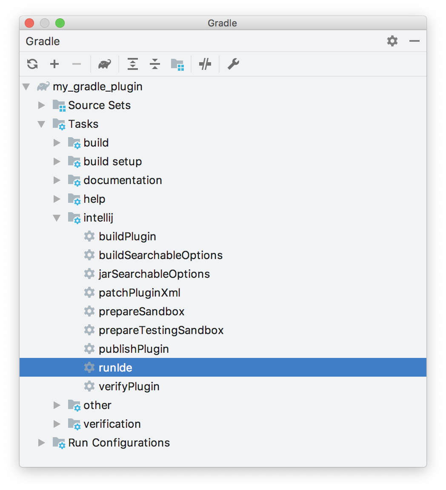

Getting Started with Gradle
Gradle is the preferred solution for creating Consulo plugins. The IntelliJ IDEA Ultimate and Community editions bundle the necessary plugins to support Gradle-based development. These IntelliJ IDEA plugins are Gradle and Plugin DevKit, which are enabled by default. To verify these plugins are installed and enabled, see the help section about Managing Plugins.
TIP Consulo Plugin Template makes it easier to create and maintain your IDE plugins, having the Gradle plugin already integrated and CI covered with GitHub Actions.
WARNING When adding additional repositories to your Gradle build script, always use HTTPS protocol.
- bullet list {:toc}
Creating a Gradle-Based Consulo Plugin with New Project Wizard
Creating new Gradle-based Consulo plugin projects is performed using the New Project Wizard. The Wizard creates all the necessary project files based on a few template inputs.
Before creating a new Gradle project, familiarize yourself with the help topic Creating a new Gradle project, which is a tutorial for creating general Gradle projects in IntelliJ IDEA. This page emphasizes the steps in the process of creating Consulo plugin projects that are Gradle-based.
WARNING Please note that Gradle 6.1 has a known bug that prevents using it for developing plugins, please upgrade to 6.1.1 or later.
Launch the New Project Wizard. It guides you through the Gradle project creation process with two screens.
New Project Configuration Screen
On the first screen, the type of project is configured: * From the project type pane on the left, choose Gradle. * Specify the Project SDK based on the Java 8 JDK. This SDK will be the default JRE used to run Gradle, and the JDK version used to compile the plugin Java sources.
NOTE When targeting 2020.3 and later only, using Java 11 is now required, please see blog post
- In the Additional Libraries and Frameworks panel, select Java and Consulo Plugin. These settings will be used for the remainder of this tutorial.
Optionally:
* To include support for the Kotlin language in the plugin, check the Kotlin/JVM box (circled in green below).
This option can be selected with or without the Java language.
* To create the build.gradle file as a Kotlin build script (build.gradle.kts) rather than Groovy, check the Kotlin DSL build script box (circled in magenta below).
Then click Next:
 {:width="800px"}
{:width="800px"}
Project Naming/Artifact Coordinates Screen
Expand the Artifact Coordinates section and specify a GroupId, ArtifactId, and Version using Maven naming conventions.
* GroupId is typically a Java package name, and it is used for the Gradle property project.group value in the project's build.gradle file.
For this example, enter com.your.company.
* ArtifactId is the default name of the project JAR file (without version).
It is also used for the Gradle property rootProject.name value in the project's settings.gradle file.
For this example, enter my_gradle_plugin.
* Version is used for the Gradle property project.version value in the build.gradle file.
For this example, enter 1.0.
The Name field is synced automatically with the specified ArtifactId.
Specify the path for the new project in Location and click Finish to continue and generate the project.
Components of a Wizard-Generated Gradle Consulo Plugin
For the example my_gradle_plugin, the New Project Wizard creates the following directory content:
my_gradle_plugin
├── build.gradle
├── gradle
│ └── wrapper
│ ├── gradle-wrapper.jar
│ └── gradle-wrapper.properties
├── gradlew
├── gradlew.bat
├── settings.gradle
└── src
├── main
│ ├── java
│ └── resources
│ └── META-INF
│ └── plugin.xml
└── test
├── java
└── resources
- The default Consulo
build.gradlefile (see next paragraph). - The Gradle Wrapper files, and in particular the
gradle-wrapper.propertiesfile, which specifies the version of the Gradle to be used to build the plugin. If needed, the IntelliJ IDEA Gradle plugin downloads the version of the Gradle specified in this file. - The
settings.gradlefile, containing a definition of therootProject.name. - The
META-INFdirectory under the defaultmainSourceSet contains the plugin configuration file.
The generated my_gradle_plugin project build.gradle file:
plugins {
id 'java'
id 'org.jetbrains.intellij' version '0.6.5'
}
group 'com.your.company'
version '1.0'
sourceCompatibility = 1.8
repositories {
mavenCentral()
}
dependencies {
testImplementation group: 'junit', name: 'junit', version: '4.12'
}
// See https://github.com/JetBrains/gradle-intellij-plugin/
intellij {
version '2020.1'
}
patchPluginXml {
changeNotes """
Add change notes here.<br>
<em>most HTML tags may be used</em>"""
}
- Two plugins to Gradle are explicitly declared:
- The Gradle Java plugin.
- The gradle-intellij-plugin.
- The GroupId from the Wizard Project Naming/Artifact Coordinates Screen is the
project.groupvalue. - The Version from the Wizard Project Naming/Artifact Coordinates Screen is the
project.versionvalue. - The
sourceCompatibilityline is injected to enforce using Java 8 JDK to compile Java sources. - The only comment in the file is a link to the README.md for the gradle-intellij-plugin, which is a reference for its configuration DSL.
- The value of the Setup DSL attribute
intellij.versionspecifies the version of the Consulo to be used to build the plugin. It defaults to the version of IntelliJ IDEA that was used to run the New Project Wizard. - The value of the Patching DSL attribute
patchPluginXml.changeNotesis set to a place holder text.
Plugin Gradle Properties and Plugin Configuration File Elements
The Gradle properties rootProject.name and project.group will not, in general, match the respective plugin configuration file plugin.xml elements <name> and <id>.
There is no Consulo-related reason they should as they serve different functions.
The <name> element (used as the plugin's display name) is often the same as rootProject.name, but it can be more explanatory.
The <id> value must be a unique identifier over all plugins, typically a concatenation of the specified GroupId and ArtifactId.
Please note that it is impossible to change the <id> of a published plugin without losing automatic updates for existing installations.
Adding Gradle Support to an Existing DevKit-Based Consulo Plugin
Converting a DevKit-based plugin project to a Gradle-based plugin project can be done using the New Project Wizard to create a Gradle-based project around the existing DevKit-based project:
* Ensure the directory containing the DevKit-based Consulo plugin project can be fully recovered if necessary.
* Delete all the artifacts of the DevKit-based project:
* .idea directory
* [modulename].iml file
* out directory
* Arrange the existing source files within the project directory in the Gradle SourceSet format.
* Use the New Project Wizard as though creating a new Gradle project from scratch.
* On the Project Naming/Artifact Coordinates Screen set the values to:
* GroupId to the existing package in the initial source set.
* ArtifactId to the name of the existing plugin.
* Version to the same as the existing plugin.
* Name to the name of the existing plugin.
(It should be pre-filled from the ArtifactId)
* Set the Location to the directory of the existing plugin.
* Click Finish to create the new Gradle-based plugin.
* Add more modules using Gradle Source Sets as needed.
Running a Simple Gradle-Based Consulo Plugin
Gradle projects are run from the IDE's Gradle Tool window.
Adding Code to the Project
Before running my_gradle_project, some code can be added to provide simple functionality.
See the Creating Actions tutorial for step-by-step instructions for adding a menu action.
Executing the Plugin
Open the Gradle tool window and search for the runIde task:
* If it’s not in the list, hit the Refresh button at the top of the Gradle window.
* Or Create a new Gradle Run Configuration.
{:width="398px"}
Double-click on the runIde task to execute it. See the IntelliJ IDEA help for more information about Working with Gradle tasks.
Finally, when my_gradle_plugin launches in the IDE development instance, there should be a new menu under the Tools menu.